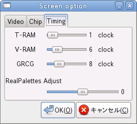

テキスト RAM へのアクセス時のウェイトクロックを指定します。
グラフィック RAM へのアクセス時のウェイトクロックを指定します。
条件にも依りますが、実機のグラフィック RAM へのアクセスはかなりの時間が掛かります。スクロールが速すぎる場合、大きめの値に設定して下さい。
GRCG 動作中のグラフィック RAM へのアクセス時のウェイトクロックを指定します。
Real Palettes 動作中のパレット変更タイミングを調節します。数値はライン数で指定します。